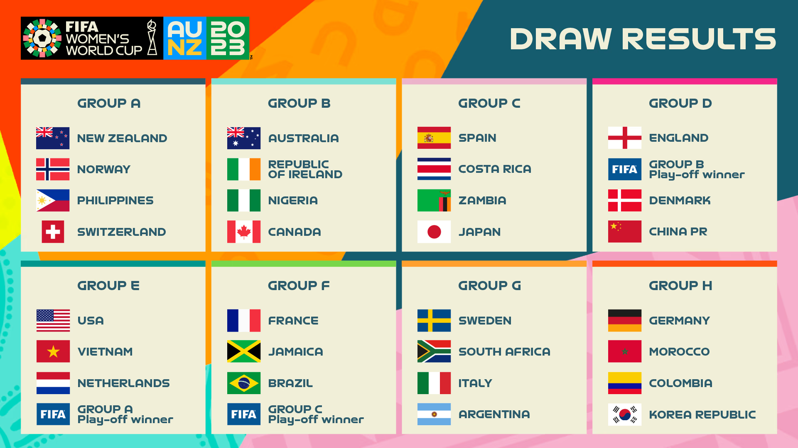

Copa Mundial Femenina de Fútbol de 2023
La Copa Mundial Femenina de la FIFA Australia/Nueva Zelanda 2023™ será la novena edición de la Copa Mundial Femenina de Fútbol organizada por la FIFA.
Se llevará a cabo en Australia y Nueva Zelanda, siendo la primera vez que una candidatura conjunta gana la sede de un mundial femenino, y la primera oportunidad en la que se realizará la copa en el continente oceánico.
Será la primera edición que cuente con la participación de 32 selecciones, tras la aprobación del Consejo de la FIFA del 31 de julio de 2019
Balón oficial
OCEAUNZ, el nombre del balón oficial, refleja la unión de Australia y Aotearoa Nueva Zelanda como naciones anfitrionas del torneo. Su diseño está inspirado en los paisajes naturales únicos de las dos naciones anfitrionas, con imágenes que recuerdan las vastas montañas de Aotearoa, Nueva Zelanda y la conexión de Australia con el Océano Índico.
Fixture
Los 32 equipos que participan en la fase final se dividen en 8 grupos de 4 equipos cada uno. Dentro de cada grupo se enfrentan una vez entre sí, mediante el sistema de todos contra todos. Según el resultado de cada partido se otorgan tres puntos al ganador, un punto a cada equipo en caso de empate, y ninguno al perdedor.

Grupo A
- 20 de julio: Nueva Zelanda vs Noruega, Eden Park, Auckland.
- 20 de julio: Nueva Zelanda vs Noruega, Eden Park, Auckland.
- 21 de julio: Filipinas vs Suiza, Forsyth Barr Stadium, Dunedin.
- 25 de julio: Nueva Zelanda vs Filipinas, Wellington Regional Stadium, Wellington
- 25 de julio: Suiza vs Noruega, Waikato Stadium, Hamilton
- 30 de julio: Suiza vs Nueva Zelanda, Forsyth Barr Stadium, Dunedin
- 30 de julio: Noruega vs Filipinas, Eden Park, Auckland
Grupo B
- 20 de julio: Australia vs República de Irlanda, Sydney Football Stadium, Sydney
- 21 de julio: Nigeria vs Canadá, Melbourne Rectangular Stadium, Melbourne
- 26 de julio: Canadá vs República de Irlanda, Perth Rectangular Stadium Perth
- 27 de julio: Australia vs Nigeria, Lang Park, Brisbane
- 25 de julio: Suiza vs Noruega, Waikato Stadium, Hamilton
- 31 de julio: Canadá vs Australia, Melbourne Rectangular Stadium, Melbourne
- 31 de julio: República de Irlanda vs Nigeria, Lang Park, Brisbane
Grupo C
- 21 de julio: España vs Costa Rica, Wellington Regional Stadium Wellington
- 21 de julio: España vs Costa Rica, Wellington Regional Stadium Wellington
- 22 de julio: Zambia vs Japón, Waikato Stadium, Hamilton
- 26 de julio: España vs Zambia, Eden Park, Auckland
- 26 de julio: Japón vs Costa Rica, Forsyth Barr Stadium, Dunedin
- 31 de julio: Japón vs España, Wellington Regional Stadium Wellington
- 31 de julio: Costa Rica vs Zambia, Waikato Stadium, Hamilton
Grupo D
- 22 de julio: Inglaterra vs Senegal/Haití/Chile, Lang Park, Brisbane
- 22 de julio: Dinamarca vs China, Perth Rectangular Stadium, Perth
- 28 de julio: Inglaterra vs Dinamarca, Sydney Football Stadium, Sydney
- 28 de julio: China vs Senegal/Haití/Chile, Hindmarsh Stadium, Adelaide
- 1 de agosto: China vs Inglaterra, Hindmarsh Stadium, Adelaide
- 1 de agosto: Senegal/Haití/Chile, Perth Rectangular Stadium, Perth
Grupo E
- 22 de julio: Estados Unidos vs Vietnam, Eden Park, Auckland
- 23 de julio: Países Bajos vs Camerún/Tailandia/Portugal, Forsyth Barr Stadium, Dunedin
- 27 de julio: Estados Unidos vs Países Bajos, Wellington Regional Stadium, Wellington
- 27 de julio: Camerún/Tailandia/Portugal vs Vietnam, Waikato Stadium, Hamilton
- 1 de agosto: Camerún/Tailandia/Portugal vs Estados Unidos, Eden Park, Auckland
- 1 de agosto: Vietnam vs Países Bajos, Forsyth Barr Stadium, Dunedin
Grupo F
- 23 de julio: Francia vs Jamaica, Sydney Football Stadium, Sydney
- 24 de julio: Brasil vs China Taipei/Paraguay/Papua Nueva Guinea/Panamá, Hindmarsh Stadium, Adelaide
- 29 de julio: Francia vs Brasil, Lang Park, Brisbane
- 29 de julio: China Taipei/Paraguay/Papua Nueva Guinea/Panamá vs Jamaica, Perth Rectangular Stadium, Perth
- 2 de agosto: China Taipei/Paraguay/Papua Nueva Guinea/Panamá vs Francia, Sydney Football Stadium, Sydney
- 2 de agosto: Jamaica vs Brasil, Melbourne Rectangular Stadium, Melbourne
Grupo G
- 23 de julio: Suecia vs Sudáfrica, Wellington Regional Stadium, Wellington
- 24 de julio: Italia vs Argentina, Eden Park, Auckland
- 28 de julio: Argentina vs Sudáfrica, Forsyth Barr Stadium, Dunedin
- 29 de julio: Suecia vs Italia, Wellington Regional Stadium, Wellington
- 2 de agosto: Argentina vs Suecia, Waikato Stadium, Hamilton
- 2 de agosto: Sudáfrica vs Italia, Wellington Regional Stadium, Wellington
Grupo H
- 24 de julio: Alemania vs Marruecos, Melbourne Rectangular Stadium, Melbourn
- 25 de julio: Colombia vs República de Corea, Sydney Football Stadium, Sydney
- 30 de julio: Alemania vs Colombia, Sydney Football Stadium, Sydney
- 30 de julio: República de Corea vs Marruecos, Hindmarsh Stadium, Adelaide
- 3 de agosto: República de Corea vs Alemania, Lang Park, Brisbane
- 3 de agosto: Marruecos vs Colombia, Perth Rectangular Stadium, Perth
Octavos de final
- 5 de agosto: Ganador A vs Segundo C, Eden Park, Auckland (49)
- 5 de agosto: Ganador C vs Segundo A, Wellington Regional Stadium, Wellington (50)
- 6 de agosto: Ganador E vs Segundo G, Sydney Football Stadium, Sydney (51)
- 6 de agosto: Ganador G vs Segundo E, Melbourne Rectangular Stadium, Melbourne (52)
- 7 de agosto: Ganador B vs Segundo D, Stadium Australia, Sydney (53)
- 7 de agosto: Ganador D vs Segundo B, Lang Park, Brisbane (54)
- 8 de agosto: Ganador F vs Segundo H, Hindmarsh Stadium, Adelaide (55)
- 8 de agosto: Ganador H vs Segundo F, Melbourne Rectangular Stadium, Melbourne (56)
Cuartos de final
- 11 de agosto: Ganador 49 vs Ganador 51, Wellington Regional Stadium, Wellington (57)
- 11 de agosto: Ganador 50 vs Ganador 52, Eden Park, Auckland (58)
- 12 de agosto: Ganador 53 vs Ganador 55, Lang Park, Brisbane (59)
- 12 de agosto: Ganador 54 vs Ganador 56, Stadium Australia, Sydney (60)
Semifinales
- 15 de agosto: Ganador 57 vs Ganador 58, Eden Park, Auckland (61)
- 16 de agosto: Ganador 59 vs Ganador 60, Stadium Australia, Sydney (62)
Partido por el tercer puesto
- 19 de agosto: Perdedor 61 vs Perdedor 62, Lang Park, Brisbane (63)
Final
- 20 de agosto: Ganador 61 vs Ganador 62, Stadium Australia, Sydney (64)